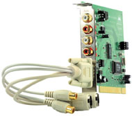
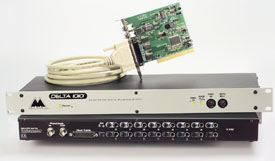
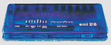
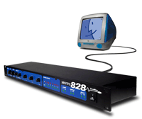

Audio production tools and their connections have been with us for some time and have been the standards in commercial music production. For us, the computer is the central tool that we'll be using in desktop productions. Many of the many tasks traditionally performed in the physical world are now done on the desktop.
As an audio tool,your computer performs three main functions:
Since storage and DSP functions are often handled by a host computer's hard disk and CPU, the only configuration options we need to think about have to do with A to D and D to A conversion.
.Lets take a look at some of the ways we get sound in and out of a computer.
Internal I/O
Most computers now have the ability to record and playback sound. Since manufacturers think of computers as general-purpose devices the quality of the actual AD and DA converters is consumer grade at best. Computers typically use consumer type 1/8" TRS miniplug or pairs of RCA jacks as the connections for stereo input and output. These inputs are often able to accept mic level inputs and will usually output enough power to drive a small set of speakers or headphones.
SoundCard I/O
Although the audio functions found on any recent, off-the-shelf computer will be sufficient to get you through this course, many desktop musicians find the features in a 3rd party, add-on sound card to be essential.
These cards are usually easy to install and use the industry standard PCI slots found in most desktop, tower computer configurations. As a rule, these cards use a better grade of AD and DA converters, and will usually sound better. They will also usually offer stereo digital inputs and outputs, typically S/PDIF or TOSLink and in some cases, AES/EBU
Analog connectivity is usually enhanced as a dedicated soundcards will offer a range of options such as RCA, 1/4" and in some cases balanced XLR.

Unlike the variety of levels that can be accommodated in a typical home computer, sound cards will usually only handle line level signals and are designed to be integrated into a larger desktop production system.
The inside of a computer case, where the audio circuitry used in either internal or soundcard I/O functions are located, is the devil's playground for a variety electro-magnetic sources of audio interference.
Although manufacturers work hard to design systems that isolate audio components from noise, most professional, computer-based digital audio systems isolate the audio functions of I/O and AD/DA conversion in a separate box, outside of the computer.
In addition, these systems offer both multi-channel analog and digital I/O in a variety of formats making them very easy to integrate into larger project studios. Although previously only found in expensive, professional systems, there are now many options for connecting breakout boxes to a computer.
PCI card connection. PCI slots are a computer standard for adding hardware functionality or additional processing power to existing desktop systems. The cable that connects the breakout box to the PCI card is usually proprietary and only available through the manufacturer.
USB. The Universal Serial Bus is an industry standard for connecting a wide range of standard computer peripherals. Although we don't usually think of serial data transfer as found in an Internet connection to be fast enough to support real-time audio, USB has sufficient bandwidth to reliably support limited digital audio I/O and makes a good choice to connect an entry level breakout box.

Firewire. A much faster connection is available using the industry standard IEEE 1394 (Firewire) interface. Using Firewire, we're able to reliably support multichannel I/O from an external device using this industry standard connection.

Both USB and Firewire use industry standard connectors available in any computer store and enable a wide variety of digital audio interfaces to be used with a laptop computer. This allows musicians to take their virtual studios almost anywhere and is radically redefining what we think of as "the recording studio."